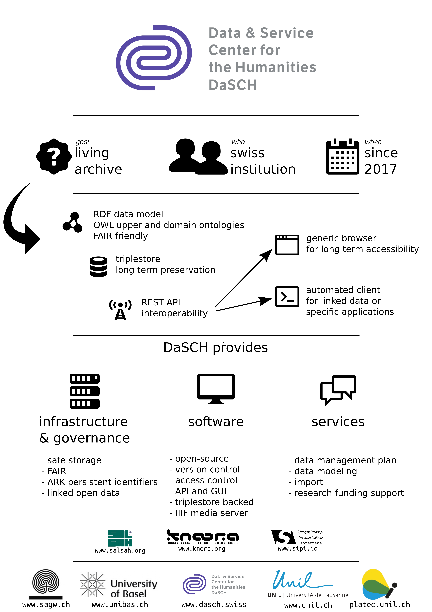

« Une allée de rosiers et de digitales fleuries » : parcours dans l’édition des œuvres de Gustave Roud
EDITIONS SAVANTES NUMERIQUES : ENJEUX ET REALISATIONS. SEMINAIRE INTERDISCIPLINAIRE-EUROPEEN ET INTERNATIONAL DE l’ECOLE DOCTORALE.
LILLE, 2 MAI 2019
Daniel Maggetti et Elena Spadini, Université de Lausanne
(slides elespdn.github.io/talks/20190502_Lille/20190502_Lille.html)
LILLE, 2 MAI 2019
Daniel Maggetti et Elena Spadini, Université de Lausanne
(slides elespdn.github.io/talks/20190502_Lille/20190502_Lille.html)
- PROJET : Gustave Roud, « Œuvres complètes »
- FOCUS : édition numérique
- CAS D'ETUDE : génèse
- CONCLUSIONS : édition (comme) critique
1. projet
Gustave Roud
« Œuvres complètes »
Gustave Roud,
« Œuvres complètes »
Projet FNS, 2017-2020
Direction : Claire Jaquier et Daniel Maggetti
Collaborateurs et collaboratrices : Alessio Christen, Bruno Pellegrino, Elena Spadini, Julien Burri, Raphaëlle Lacord
Direction : Claire Jaquier et Daniel Maggetti
Collaborateurs et collaboratrices : Alessio Christen, Bruno Pellegrino, Elena Spadini, Julien Burri, Raphaëlle Lacord
œuvres de Gustave Roud
journal intime
œuvre poétiques
propos
traductions
(photographies)
|
|
textes plusieurs volumes introductions notes |
|
|
textes liens images réseaux |
2. focus
édition numérique
site webtextesmanuscrits parcours |
architectureKnora + Sipi + Salsah |
 |
Jaouen, Loïc. (2018). Preservation and accessibility of primary research data, presentation of the "Data and Service Center for humanities" (DaSCH) (Version 1.0.0). Zenodo. doi.org/10.5281/zenodo.1456791 |
données structurées
description de manuscritsbibliographie
personnes
lieux
description de manuscrits (possibilités)
| roud-œuvres onto | TEI | LOD |
| :manuscriptHasShelfmark | idno | P48 has preferred identifier |
| :manuscriptIsInArchive | repository | P54 has current permanent location |
| :manuscriptHasDate | origin @when | dc:date |
| :hasSupportType | support | P45 consists of (E57 Material) |
Même chose pour ...bibliographiepersonnes lieux élément biographique photos |
textes (données non structurées)
encodage en TEI
mapping knora → standoff
api → xml/tei | json
3. cas d'étude
génèse
Exemple.
Air de la solitude
Notre longue marche par un pays pluvieux nous a conduits à ces quelques minutes au bord d’un lac d’argent pâle et lisse. Nous ne parlions plus. Ce silence était si lourd, si calme ; l’instant plus délicat que le paysage là-bas doucement repris par une brume translucide.
Vers une ontologie des relations génétiques
roud-œuvres:diaryRewrittenInDiary
| ▭ :Document (feuilles,petit carnets, etc.) |
→ | ▭ :Document (cahiers, etc.) |
roud-œuvres:diaryReusedIn
roud-œuvres:GeneticDossierResultsIn
| ▭ :Document |
→ | ○ :Genetic Dossier |
→ | ◇ :Publication |
roud-œuvres:isBeforeInAvantTexte
| ▭ :Document |
→ | ▭ :Document |
4. conclusions
édition (comme) critique
Quelle dimension critique pour l'édition ?
Où se trouve le positionnement scientifique ?
📷
organisation des matériaux
modèle de données
"formulare un modello di certi fenomeni equivale a formulare un'ipotesi su quei fenomeni"
Carlo Cellucci, “I modelli, l'analogia e la metafora”
"un modello di dati [deve essere] in grado di formalizzare i procedimenti analitici e critici applicabili allo studio del testo"
Dino Buzzetti, “Rappresentazione digitale e modello del testo”
Il ruolo del modello nella scienza e nel sapere (Roma, 27-28 ottobre 1998), Sergio Carrà (ed.), Accademia nazionale dei Lincei, Roma 1999.
Quelle dimension critique pour l'édition ?
Où se trouve le positionnement scientifique ?
📷
inclusion de traductions et propos
dimension textuelle + dimension matérielle
inclusion du journal dans les réseaux génétiques
limites de l'œuvre
Questions ?
Spadini, Elena. « Une allée de rosiers et de digitales fleuries » : parcours dans l’édition des œuvres de Gustave Roud. Éditions savantes numériques : enjeux et réalisations - Séminaire interdisciplinaire-européen et international de l'école doctorale, Lille, 2 mai 2019.

Image : Michael Mandiberg, DATA BASE, 2009 (CC BY-SA 2.0)